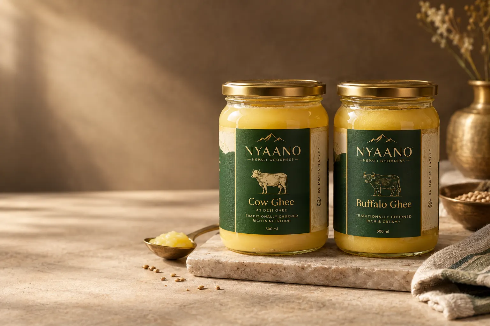
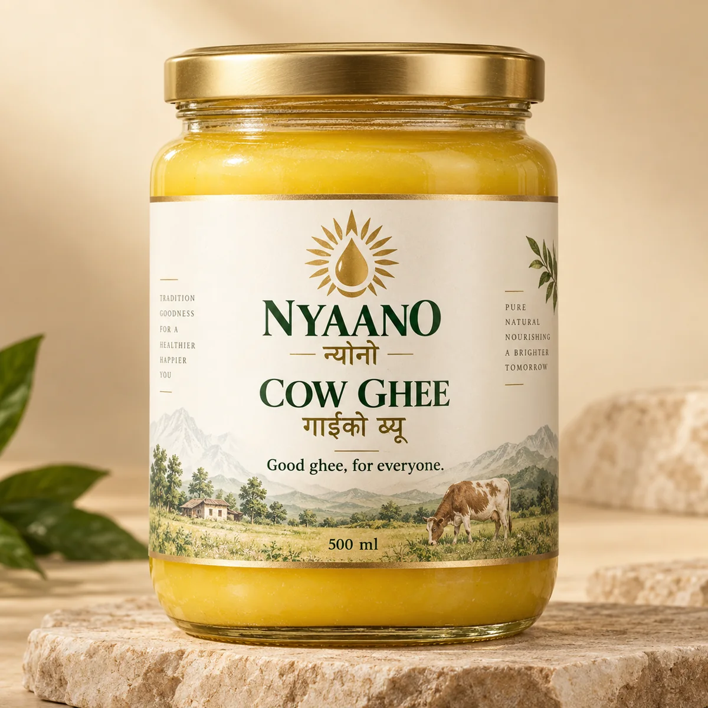
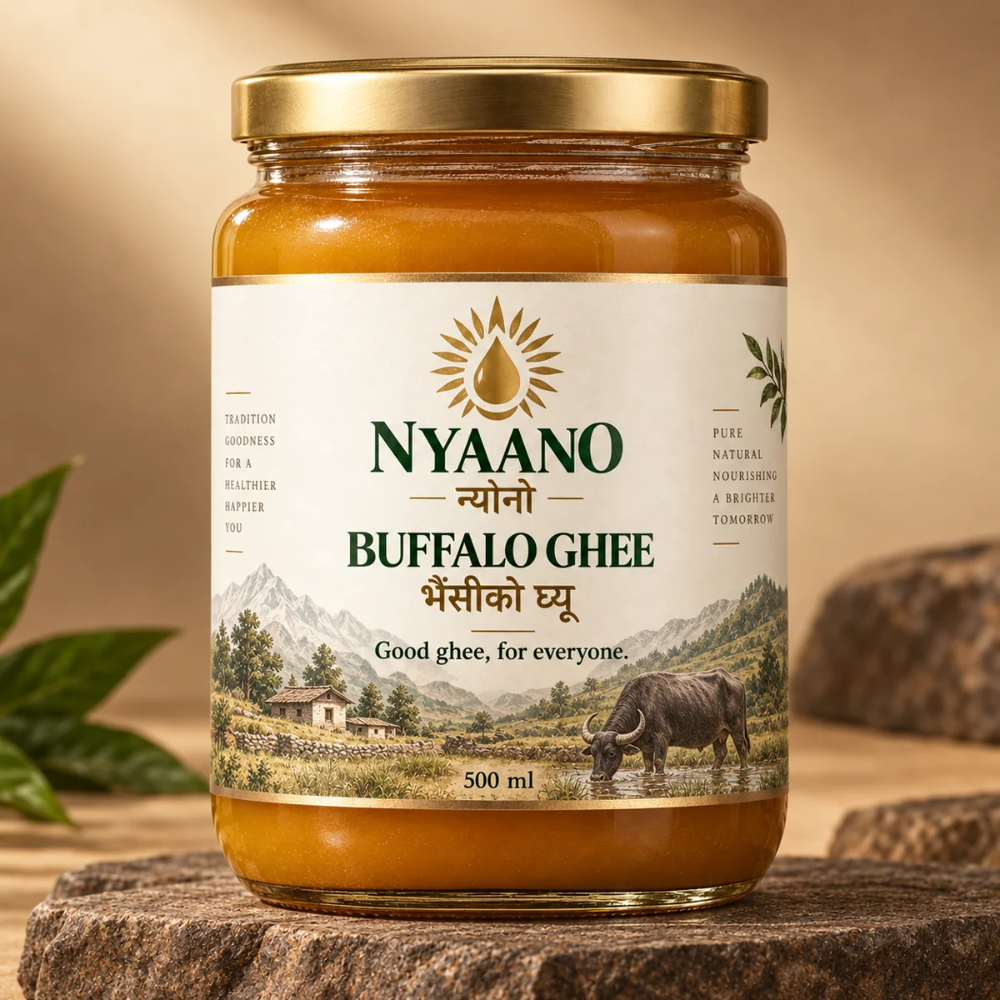

01
NYAANO Cow Ghee
Familiar. Warm. Everyday.
Clearly identified cow ghee for households that want a dependable everyday choice with a familiar taste profile.
Explore Cow Ghee →A modern Nepali ghee brand
असल घ्यू, सबैको लागि।
The familiar warmth of good local ghee, with the clarity and consistency you expect from a serious packaged-food brand.

Why NYAANO exists
We are not here to tell people that local ghee is bad or branded ghee is better. We are here to make the goodness people already value easier to identify, easier to trust and easier to buy again.
Two distinct products
NYAANO Cow Ghee
Clearly identified cow ghee for households that want a dependable everyday choice with a familiar taste profile.
Explore Cow Ghee →NYAANO Buffalo Ghee
Clearly identified buffalo ghee for people who prefer a richer, deeper ghee experience in family cooking and traditional foods.
Explore Buffalo Ghee →

The NYAANO standard
“Pure” is easy to print on a label. Our brand is designed around proof that can be checked in the real operating system behind the product.
How our standard worksEvery pack says exactly what it is: Cow Ghee or Buffalo Ghee.
Every production run is designed to have an accountable batch identity.
Release standards are defined before the brand makes quality claims.
Packaging is designed to protect the product until it reaches the customer.
Affordable trust premium
NYAANO is being built to sit close to trusted local ghee—not at an inflated “wellness” price. Final prices will be set only after supplier, packaging and trade economics are validated.
Local taste. Branded trust. Fair price.
Win together
Our philosophy is not to win by making somebody else lose. Farmers need dependable demand. Manufacturers need repeat business. Retailers need fair economics. Families need dependable products.
Read our philosophy →Go deeper
NYAANO is not only a product idea. It is a local-market strategy and a process discipline. We want people to understand both.

Made to be understood
Our packaging architecture makes the animal source, pack identity and trust information easy to find. The website follows the same rule: answer the question first, then give the detail.
Quick answers
No. The product architecture is built around separate, clearly identified cow and buffalo ghee products. Final production controls must verify that separation before launch.
The intended premium pays for professional packaging, batch accountability, quality control, consistent product standards and a brand that is answerable when something goes wrong—not for luxury positioning.
Not by default. We will not use A2, organic, grass-fed, bilona or health claims unless the actual product and evidence support them.
For retailers, wholesalers & foodservice
We are building a trade model around sell-through, fair margin and reliable replenishment—not forced overstocking.
Become a retail partner